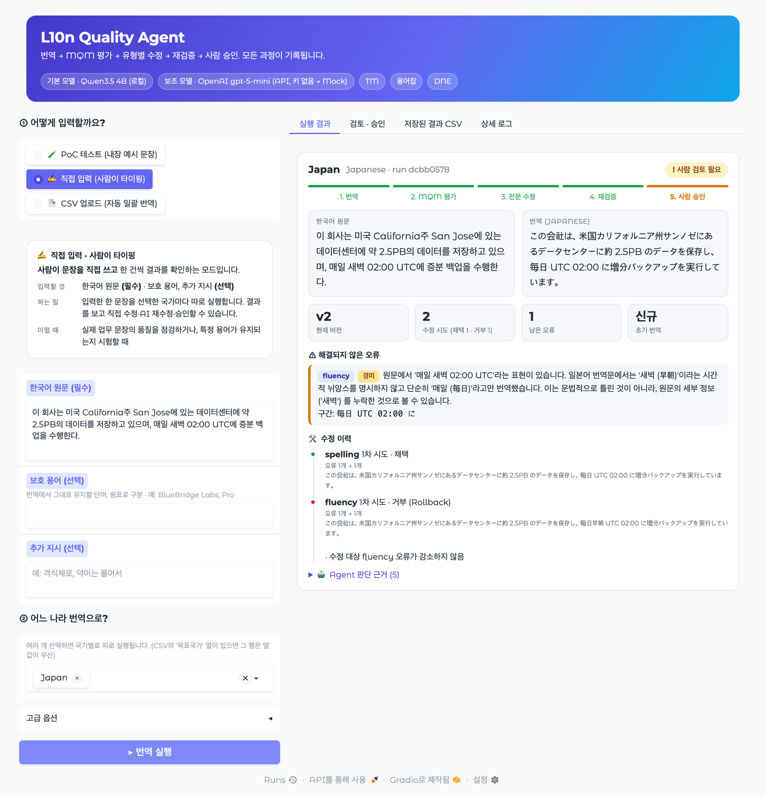

04 · Architecture
모델 호출은 LangChain, 제어는 Python
workflow.py 하나가 유일한 오케스트레이터이고, Ollama와 통신하는 곳은 chains.py뿐입니다. UI와 CLI는 같은 Workflow를 호출합니다.

번역 · MQM 평가 체인
…
번역 자원 3종
…
재현성 스냅샷
…
AI 번역의 오류를 MQM 기준으로 찾고, 유형별 전문 도구로 고치고, 나빠지면 되돌리는 번역 품질 개선 Agent
Sihun Wang (왕시훈)
AI에게 “여기만 고쳐줘”라고 하면 멀쩡한 부분까지 바꾸거나 새 오류를 만듭니다. 그래서 오류 종류별로 담당 도구를 나누고, 고칠 때마다 전체를 다시 평가해 나빠지면 되돌립니다.

오류를 하나 지적하면 모델은 문장 전체를 다시 쓰곤 합니다. 최종 결과만 보면 무엇이 문제였고 왜 그렇게 고쳤는지 되짚기도 어렵습니다.
용어 하나만 고치라 했는데 멀쩡한 표현까지 바뀝니다.
고치다가 숫자·단위가 틀어지거나 보호 용어가 사라집니다.
수정 전후와 채택·거부 이유가 남지 않아 검수자가 검증할 수 없습니다.
모델은 “다 고쳤다”고 말하지만 사람이 승인할 근거는 없습니다.
LLM은 후보를 만들 뿐, 채택·상태 전환·종료는 Python 코드가 결정합니다.
오류를 accuracy / terminology / spelling / grammar / style / fluency로 분류하고 심각도를 매깁니다.
대상 오류가 줄지 않았거나 새 Critical 오류가 생기면 후보를 버리고 이전 번역을 유지합니다.
숫자·단위·보호 용어·메타 주석 혼입은 LLM이 아니라 정규식·집합 비교로 막습니다 (validation.py).
남은 오류와 수정 이력을 보고 다음에 어떤 카테고리를 시도할지, 포기할지를 고릅니다.
Qwen이 못 풀면 gpt-5-mini로 한 번 더. 그래도 안 되면 사람 검토. API 키가 없으면 Mock으로 대체됩니다.
수정 전후, 판단 근거, 채택/거부 사유를 run_id 단위 JSON으로 남기고 결과는 CSV로 누적합니다.
코드의 실제 상태 머신(AgentStatus)과 임계값(MAX_ATTEMPTS_PER_CATEGORY=2, MAX_TOTAL_ATTEMPTS=12)을 그대로 옮겼습니다.
workflow.py 하나가 유일한 오케스트레이터이고, Ollama와 통신하는 곳은 chains.py뿐입니다. UI와 CLI는 같은 Workflow를 호출합니다.
…
…
…
어느 방식이든 이후 흐름(번역 → MQM 평가 → 수정 → 사람 승인)은 같습니다. 자동으로 하는 것은 수정까지이고, 승인은 항상 사람이 합니다.


FLORES+ dev 문장을 언어당 3개씩 뽑아(seed=42) 단순 번역(A)과 Agent 최종본(B)을 chrF로 비교한 Baseline입니다. 표본이 작아서 방향성만 봅니다.
| id | 최종 상태 | MQM 오류 (초기→최종) | 시도 | 시간 | chrF |
|---|---|---|---|---|---|
| 889 | AWAITING_APPROVAL | 0 → 0 | 0 | 1.7s | 67.3 |
| 883 | AWAITING_APPROVAL | 0 → 0 | 0 | 1.7s | 78.3 |
| 806 | HUMAN_REVIEW | 1 → 1 | 2 | 27.2s | 33.9 |
| 969 | HUMAN_REVIEW | 1 → 1 | 2 | 28.8s | 31.4 |
| 938 | HUMAN_REVIEW | 3 → 1 | 2 | 28.6s | 31.7 |
한 번에 하나의 가설만 바꾸고 전후를 기록합니다. 불리한 결과도 그대로 적었습니다 (EXPERIMENT_LOG.md).